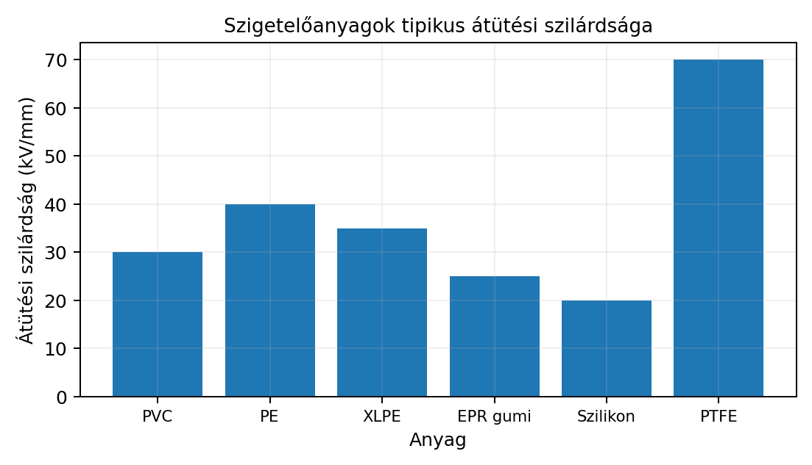

A villanyszerelő munkája során lépten-nyomon szigetelőanyagokkal találkozik: kábelköpenyek, vezetékszigetelések, kapcsolóházak, sorkapocstestek, gyűjtősíntartók, szigetelőszalagok, tekercsvázak. Ha ezeket rosszul választja meg, a következmény nem csupán működési hiba: túlmelegedés, átütés, tűz vagy áramütés is lehet. Gondoljunk egy kazánházban vezetett régi kábelre, amelynek PVC-szigetelése megkeményedett és megrepedezett, vagy egy középületre, ahol tűz esetén a halogéntartalmú műanyagok maró füstgázt fejlesztenek. Az alábbiakban a szigetelőanyagok csoportosítását, legfontosabb jellemzőit és kiválasztási szempontjait tanuljuk meg, hogy a szerelő tudatosan válasszon anyagot a feszültség, a hőmérséklet és a környezet függvényében.
A következő oszlopdiagram néhány gyakori szigetelőanyag tipikus átütési szilárdságát mutatja. A diagramon jól látható, hogy a hagyományos műanyagok (PVC, polietilén, gumi) nagyságrendileg 20–40 kV/mm értékekkel jellemezhetők, míg a fluoropolimerek (PTFE, köznyelvi nevén teflon) ennél lényegesen nagyobb villamos szilárdságot is elviselnek. A pontos értékek anyagonként, gyártónként és a vizsgálati körülményektől függően eltérnek, ezért az ábra csak nagyságrendi tájékoztatást ad.

Ábraértelmezés. A diagram a szigetelőanyagok egyik legfontosabb mutatóját, az átütési szilárdságot hasonlítja össze. A gyakorlatban a villamos méretezésnél sohasem a diagramról leolvasott értékből indulunk ki, hanem a gyártói adatlap és a hőmérsékleti, nedvességi, öregedési tényezőket is figyelembe vevő szabványos eljárás szerint.
Definíció. Szigetelőanyag: olyan anyag, amelyben a szabad töltéshordozók (elektronok, ionok) koncentrációja nagyon kicsi, ezért a rajta átfolyó villamos áram elhanyagolhatóan kicsi. A gyakorlatban a szigetelőanyag nem tökéletes, mindig van egy kis szivárgási áram, de ez a szigetelési ellenálláson keresztül jellemezhető.
Definíció. Átütési szilárdság (villamos szilárdság, dielektromos szilárdság): az a térerősség, amelynél a szigetelőanyag elveszíti szigetelőképességét, és rajta átütés (villamos kisülés) következik be. Képlete:
ahol az átütési szilárdság -ben, az átütést okozó feszültség -ban, a próbatest vastagsága -ben. A fogalom szinonimájaként használják a villamos szilárdság kifejezést is.
Definíció. Hőállósági osztály: a szigetelőanyag megengedett legnagyobb tartós üzemi hőmérsékletét jelölő betű- vagy számjelű osztály. Az osztály a szigetelés legmelegebb pontjára vonatkozik, és a szigetelőanyaggal elérhető élettartam alapján határozzák meg.
A szigetelőanyagokat halmazállapotuk szerint három nagy csoportba soroljuk: szilárd, folyékony és légnemű szigetelők.
Anyagi eredetük szerint beszélhetünk természetes (csillám, gumi, fa, papír) és mesterséges szigetelőanyagokról. A modern villamosiparban a mesterséges (szintetikus) műanyagok dominálnak, mert tulajdonságaik jól szabályozhatók.
Az átütési szilárdság a szigetelőanyag egyik legfontosabb villamos jellemzője. A levegő átütési szilárdsága normál állapotban körülbelül , a transzformátorolajé –. A szilárd műanyagoké ennél nagyobb: a PVC, PE, XLPE, gumi és szilikon anyagok jellemzően – értékekkel jellemezhetők, a PTFE pedig akár –-t is elérhet. (Ezek az értékek tájékoztató jellegűek, a pontos adat a gyártói katalógusban található. Ellenőrizendő: aktuális gyártói adatlap.)
A szigetelőanyag átütését két fő mechanizmus okozhatja:
A gyakorlatban a szigetelőanyagok öregedését, a nedvességfelvételt, a mechanikai sérüléseket és a szennyeződéseket is figyelembe kell venni. Egy szigetelés sosem bír el tartósan annyi feszültséget, mint amennyit a pillanatnyi átütési szilárdsága alapján számíthatnánk; a tervezők ezért jelentős biztonsági tényezővel dolgoznak.
A villamos szigetelőanyagokat a megengedett maximális tartós üzemi hőmérsékletük szerint szabványos osztályokba soroljuk. A leggyakoribb osztályok:
| Osztály | Megengedett tartós hőmérséklet | Tipikus anyagok |
|---|---|---|
| Y | pamut, papír, természetes cellulóz | |
| A | impregnált pamut, papír, egyes lakkok | |
| E | hőálló lakkok, bizonyos műgyanták | |
| B | üvegszálas epoxi, csillámos szigetelések | |
| F | üvegszál, csillám, magas hőfokú műgyanták | |
| H | szilikon, üvegszál, csillám | |
| 200 (N) | speciális szilikon- és üvegszál/csillám alapú rendszerek | |
| 220 (R) | speciális üvegszál/csillám alapú rendszerek | |
| 250 | kerámia, csillám, egyes szervetlen anyagok |
A régi terveken és adatlapokon „C” (180 °C felett) osztályjelölést is találsz; ezt a számjegyes osztályok váltották fel (ellenőrizendő: MSZ EN 60085, a betűjelek és a számjegyes osztályok megfeleltetése).
A betűs hőállósági osztályokat elsősorban gépek, transzformátorok tekercsszigetelési rendszereire használjuk; a kábeleknél a megengedett legnagyobb vezetőhőmérséklet a jellemző adat (PVC kb. 70 °C, XLPE/EPR kb. 90 °C – ellenőrizendő: kábel-termékszabvány vagy adatlap).
A táblázat osztályhatárai a szigetelőanyag legmelegebb pontjára vonatkoznak. A hőmérsékleti osztály kiválasztásakor a szerelőnek ismernie kell a gép vagy hálózat üzemi hőmérsékletét. Például egy motor tekercselésénél a rézveszteség, a vasveszteség és a környezeti hőmérséklet együttesen határozza meg a tekercs hőmérsékletét. Ha a mért legmelegebb pont , akkor F osztályú szigetelőanyagot kell választani, mert az -ig tűri a tartós hőt. A pontos melegedési határokat a gép szabványa és a gyártó adatlapja rögzíti, ezért a táblázat értékei tájékoztató jellegűek. (Ellenőrizendő: hatályos szabványok és gyártói adatlapok.)
Továbbvitt eredmény. A hőállósági osztályokat, a hozzájuk tartozó tipikus anyagokat és a villamos szilárdság fogalmát használjuk a Passzív alkatrészek: ellenállás, kondenzátor, tekercs alfejezetben, ahol az ellenállások és kondenzátorok szigetelését is vizsgáljuk; a Vezeték- és kábeltípusok, jelölésrendszer alfejezetben, ahol a kábelek szigetelőanyagai és hőállósági adatai szerepelnek; továbbá a Vaslemezek, tekercsvezetők és szigetelési osztályok alfejezetben, ahol a motor- és transzformátortekercsek szigetelési rendszerét mélyítjük el.
A szigetelőanyagok éghetősége tűzvédelmi szempontból kulcsfontosságú. A műanyagok többsége éghető, ezért a villamosipari alkalmazásban égésgátló adalékokkal módosítják őket. A leggyakoribb égésgátló adalékok halogéneket (klórt, brómot) tartalmaznak; a PVC maga is halogéntartalmú (klórtartalmú) polimer.
A halogéntartalmú anyagok égésekor maró, mérgező füstgázok (pl. sósav) keletkeznek. Ezért középületekben, alagutakban, egészségügyi intézményekben, járművekben egyre gyakrabban írnak elő halogénmentes (HFFR, LSZH, azaz Low Smoke Zero Halogen) kábeleket. Ezek égésekor kevesebb füst és kevésbé maró gáz keletkezik, így a menekülési útvonalak és a tűzoltói beavatkozás szempontjából kedvezőbbek.
Az éghetőség jellemzésére szabványos vizsgálatokat és osztályokat használnak (pl. éghetőségi fokozatok, csepegés, füstgázsűrűség, korrozivitás). A szerelőnek nem kell minden vizsgálati módszert fejből ismernie, de tudnia kell, hogy a létesítési előírás vagy a megrendelő halogénmentes kábelt írhat elő, és ilyenkor a kábel jelöléséből kell felismernie a követelményt. Az épületbe tartósan beépített kábelek tűzviselkedési osztályát a CPR (az építési termékekről szóló uniós rendelet) szerinti Euroclass jelzi, például Cca-s1,d1,a1 (ellenőrizendő: MSZ EN 50575, MSZ EN 13501-6 és az OTSZ/TvMI alkalmazási követelményei). Az „s” a füstképzés, a „d” az égő csepegés, az „a” a savasság fokozata; a „halogénmentes” tulajdonság önmagában nem jelent jobb tűzviselkedési osztályt.
A következő anyagokkal találkozik leggyakrabban a villanyszerelő:
A kiválasztás során nem csak a hőmérséklet és a feszültség, hanem a mechanikai igénybevétel, a nedvesség, az UV-sugárzás, a vegyszerek és az éghetőségi követelmények is számítanak.
Ezek az anyagok a szerelő kezében kész termékként jelennek meg. Az alábbi ábrán: az 1 kábel érszigetelése és köpenye (PVC, XLPE vagy halogénmentes keverék), a 2 PVC szigetelőszalag, a 3 zsugorcső zsugorítás előtt és után, a 4 hőre keményedő, üvegszál-erősítésű támszigetelő (síntartó), az 5 poliamid sorkapocstest a fém kapocstest körül, a 6 hőre lágyuló szerelvénydoboz és a 7 hőálló szilikon vezeték.
Az anyagcsoport megmondja, mire kell figyelni: a hőre lágyuló sorkapocstest és doboz melegre deformálódik, túlhúzott csavartól megreped, a hőre keményedő támszigetelő viszont nem lágyul meg, túlmelegedéskor elszenesedik. A HTML-kiadásban a számokra mutatva elolvashatod az egyes elemek anyagát és szerepét.
A műanyagok két fő csoportja a hőre lágyuló (termoplasztikus) és a hőre keményedő (duroplasztikus) anyagok.
A szerelőnek a gyakorlatban alapvetően nem gyártania, hanem beépíteni és utólag megmunkálni kell a műanyag alkatrészeket. Ehhez ismernie kell az anyagok tulajdonságait:
A műanyagok megmunkálásakor mindig tartsuk be a gyártó utasításait, és gondoskodjunk megfelelő szellőzésről, mert egyes műanyagok hegesztése, vágása egészségre ártalmas gázokat fejleszthet.
Zsugorcső és szigetelőszalag a szerelésben. A leggyakrabban „megmunkált” szigetelőanyag a hőre zsugorodó cső: a gyártás során kitágított, térhálósított műanyag cső melegítésre visszaszűkül az eredeti átmérőjére (a zsugorítási arányt, pl. 2:1 vagy 3:1, a gyártó adja meg). A belső ragasztóréteges változat nedvesség ellen is tömít. Az alábbi ábra egy présösszekötős toldás szigetelését mutatja hat lépésben, tanműhelyi, feszültségmentes vezetékmintán: 1 a csövet a kötés előtt húzzuk rá; 2 a présösszekötőt a gyártó szerinti szerszámmal préseljük; 3 a csövet középre toljuk, hogy mindkét oldalon fedje az érszigetelést; 4 hőlégfúvóval, középről kifelé, a vezetéket forgatva melegítünk; 5 kihűlés után szemrevételezünk; 6 a szigetelőszalagot enyhén feszítve, félátfedéssel tekerjük.
A leggyakoribb hiba, hogy a csövet a kötés elkészülte után már nem lehet ráhúzni; a másik a túlhevítés nyílt lánggal, amely a csövet és az érszigetelést is megégeti. A szigetelőszalag kiegészítő szigetelésre és jelölésre jó, de sérült kábelköpenyt nem pótol: azt a kábel cseréjével vagy erre minősített javítókészlettel kell helyreállítani. A HTML-kiadásban a hat lépés lejátszható.
1. példa – Átütési feszültség becslése (tanulási cél)
Adott: egy vastag PVC fólia, amelynek gyártói átütési szilárdsága . Keresett: mekkora feszültséget bírna el elméletileg a fólia egyenletes térerősség esetén? Képlet: . Behelyettesítés: Ellenőrzés: a kapott elméleti érték. A valóságban a szigetelés vastagsága, a hőmérséklet, a nedvesség és a hosszú távú öregedés miatt a megengedett üzemi feszültség ennél lényegesen kisebb, ezért a gyakorlatban a tervezők biztonsági tényezőt alkalmaznak (jellemzően –-szeres tartalékot). Figyelem: ez a számítás csak az átütési szilárdság fogalmát szemlélteti, nem helyettesíti a szabványos szigetelési méretezést.
2. példa – Hőállósági osztály kiválasztása motor tekercseléséhez
Adott: egy motor üzemi mérése során a tekercs legmelegebb pontján hőmérsékletet mérünk. A motor törpefeszültségű rendszerben dolgozik, a környezeti hőmérséklet . Keresett: milyen hőállósági osztályú szigetelőanyagot válasszunk? Megoldás: a hőállósági osztály táblázatából az F osztály tartós hőmérsékletet enged meg. Mivel a mért ez alatt van, az F osztály megfelelő lehet, de ha további hőmérséklet-emelkedés várható, H osztályt () érdemes választani. A pontos melegedési határértékeket a motorszabvány és a gyártói adatlap adja meg, ezért a végső döntéshez azokat kell használni. (Ellenőrizendő: aktuális szabványi melegedési határok.)
Szabvány. A villamos szigetelőanyagok hőállósági osztályozását az MSZ EN 60085 szabvány írja le, amely a számjegyes osztályokat (90, 105, 120, 130, 155, 180, 200, 220, 250 °C) és a hozzájuk rendelt betűjeleket rögzíti (ellenőrizendő: a szabvány aktuális kiadása). A szigetelések villamos méretezéséhez az MSZ EN 60664 jellegű szabványt (szigetelési koordináció) kell figyelembe venni, amely a térerősség, a túlfeszültségek és a szennyezettség függvényében ad útmutatást. Kisfeszültségű villamos berendezésekben a szigetelőanyagok kiválasztására és alkalmazására az MSZ HD 60364 sorozat is követelményeket fogalmaz meg, különösen a tűzállóság és az éghetőség terén. A konkrét szabványszakaszokat, táblázatokat és határértékeket mindig a kiadás előtti ellenőrzés szerint kell pontosítani. (Ellenőrizendő: hatályos szabványkiadások és pontos szakaszok.)
Egy társasházi kazánházban a szerelő azt tapasztalta, hogy a régi, PVC-szigetelésű kábelek köpenye megkeményedett, és hajlításkor megrepedezett. A kazánházban a hőmérséklet tartósan – körül volt, de a csövek közelében ennél is melegebb. A PVC hosszú távon nem tolerálja ezt a hőterhelést: a lágyítószerek kiöregednek, a szigetelés rideggé válik, és a repedésekbe nedvesség juthat. A szerelő a kábelcserénél XLPE szigetelésű, hőállóbb kábelt választott, és a fűtési környezetben az éghetőségi követelményeket is figyelembe véve halogénmentes kivitelt rendelt. Az eset tanulsága: a szigetelőanyag hőállóságát nem a pillanatnyi üzemi hőmérsékletből, hanem a legmelegebb pont várható tartós hőmérsékletéből kell meghatározni, és mindig a gyártói adatlapot kell alapul venni. A számítás is ezt támasztja alá: az XLPE-kábel 90 °C-os határa 70 °C-os környezetben csak kb. -szoros terhelhetőséget enged (ellenőrizendő: MSZ HD 60364-5-52 javítótényező-táblázat), ezért a keresztmetszetet is újra kellett ellenőrizni, és a kábelt a csövektől távolabb vezették; lásd a Terhelhetőség, melegedés és javítótényezők alfejezetet.
1. feladat (A). Definiáld a szigetelőanyag, a villamos szilárdság és a hőállósági osztály fogalmát. Add meg a villamos szilárdság képletét és a benne szereplő mennyiségek mértékegységét!
2. feladat (A). Add meg a következő anyagok megengedett tartós vezetőhőmérsékletét nagyságrendileg (kábelszigetelésként): PVC, PE, XLPE, természetes gumi, szilikon, PTFE. Melyik alkalmas tartós hőmérsékletre?
3. feladat (B). Egy
vastag szigetelőréteg átütési szilárdsága
.
a) Mekkora elméleti átütési feszültséget bír?
b) Ha a kábel névleges feszültsége
,
mekkora a biztonsági tényező az elméleti átütéshez képest?
c) Miért nem szabad ezt a biztonsági tényezőt tervezési értékként
használni?
4. feladat (B). Kültéri napelemes rendszerhez kábelt kell választani. A kábelnek UV-sugárzásnak, nedvességnek és és közötti hőmérséklet-ingadozásnak is ellen kell állnia (a modulok mögött ennél melegebb is lehet). Milyen szigetelő- és köpenyanyagot választanál, és miért? Indokold a választást!
5. feladat (C). Miért nem elegendő egy szigetelőanyag átütési szilárdságának ismerete a megbízható szigetelés kiválasztásához? Adj meg legalább három további tulajdonságot, és magyarázd el mindegyik szerepét egy kábelszigetelés esetén!
6. feladat (D). Egy kapcsolószekrényben a
gyűjtősíntartó bakok megolvadtak, deformálódtak. A szerelőnek cserélnie
kell őket.
a) Mi alapján választod ki a cserealkatrészt, és milyen anyagcsoportba
(hőre lágyuló vagy hőre keményedő) tartozhat?
b) Milyen adatlapi jellemzőket ellenőriznél a cserealkatrész
hőállóságának és éghetőségének megállapítására?
c) A gyűjtősínek közelében
-ot
mértek. Mit jelent ez a mérés, és milyen adatlapi tartós hőmérsékletű
síntartó építhető be? Miben különbözik ez a tekercsszigetelési
rendszerek hőállósági osztályától (amelyet a Vaslemezek, tekercsvezetők és szigetelési
osztályok alfejezet tárgyal)?
1. feladat (A).
- Szigetelőanyag: olyan anyag, amelyben a szabad
töltéshordozók koncentrációja nagyon kicsi, ezért a rajta átfolyó áram
elhanyagolhatóan kicsi.
- Villamos szilárdság (átütési szilárdság): az a
térerősség, amelynél a szigetelőanyag elveszíti szigetelőképességét, és
rajta átütés következik be. Képlete:
.
- Hőállósági osztály: a szigetelőanyag megengedett
maximális tartós üzemi hőmérsékletét jelölő betű- vagy számjelű osztály
(Y, A, E, B, F, H, 200, 220, 250; a régi „C” jelölés 180 °C felettit
jelentett).
- A képletben
mértékegysége
,
mértékegysége
,
mértékegysége
.
2. feladat (A).
- PVC: megengedett tartós vezetőhőmérséklet kb.
.
- PE: kb.
.
- XLPE és EPR: kb.
.
- Természetes gumi: kb.
(a típustól függ).
- Szilikon: kb.
.
- PTFE: kb.
.
(Ellenőrizendő: gyártói adatlap.) A betűs hőállósági osztályokat
(Y…H) a gépek, transzformátorok tekercsszigetelési rendszereire
használjuk, nem a kábelekre.
tartós hőmérsékletre a szilikon alkalmas,
PTFE is.
3. feladat (B).
a)
.
b) Biztonsági tényező:
.
c) Ez az elméleti biztonsági tényező nem használható tervezési
értékként, mert a valós szigetelés hőmérséklettől, nedvességtől,
öregedéstől, mechanikai sérülésektől és a villamos tér inhomogenitásától
függően sokkal korábban tönkremehet, mint az ideális próbatest.
4. feladat (B).
Napelemes egyenáramú oldalra az erre minősített, halogénmentes,
térhálósított szigetelésű és köpenyű PV-kábelt választjuk (MSZ EN 50618,
pl. H1Z2Z2-K – ellenőrizendő: aktuális szabvány és gyártói adatlap),
amely UV-, ózon- és időjárásálló, és a modul mögötti magasabb
hőmérsékletre is méretezett. Indoklás: a térhálósított (XLPE/EPR
jellegű) szigetelés és köpeny jó hőállóságot és hőciklus-tűrést ad, az
UV-álló köpeny védi a szigetelést a napsugárzástól, a halogénmentes
anyag tűz esetén kevesebb füstöt és maró gázt fejleszt. A PVC vagy PE
köpenyű általános kábel nem PV-kábel, kültéri DC sztringvezetéknek nem
megfelelő. (A konkrét típus kiválasztása a gyártói adatlap és a
vonatkozó szabvány szerint történik.)
5. feladat (C).
Az átütési szilárdság önmagában nem elég, mert:
- Hőállóság: a folyamatos üzemi hőmérséklet határozza
meg az élettartamot, a hőmérséklet-emelkedés csökkenti a szigetelési
ellenállást.
- Vízfelvétel és nedvességállóság: a nedvesség
csökkenti az átütési szilárdságot és korróziót okozhat.
- Mechanikai tulajdonságok: a szigetelésnek hajlítást,
vibrációt, mechanikai igénybevételt kell elviselnie.
- Vegyszerállóság: savas vagy lúgos környezetben a
megfelelő anyag kiválasztása elengedhetetlen.
Ezek együttesen biztosítják, hogy a szigetelés a teljes élettartam alatt
megbízható maradjon.
6. feladat (D).
Előzetes lépések. A megolvadás túlmelegedés tünete
(laza sínkötés, túlterhelés, felharmonikusok, rossz szellőzés), ezért
előbb az okot kell megkeresni: hőkamerás vizsgálat, a kötések
nyomatékának ellenőrzése, terhelőáram mérése. A cserét csak a
feszültségmentesítés öt szabálya után végezzük (lekapcsolás,
visszakapcsolás elleni biztosítás, feszültségmentesség ellenőrzése,
földelés és rövidre zárás, szomszédos részek lefedése).
Cserealkatrészként a kapcsolószekrény gyártója által megadott típus
építhető be (MSZ EN 61439 – ellenőrizendő), mert a tervigazolás erre
vonatkozik, nem „saját választású” anyagra.
A szigetelőanyagok a villamos berendezés legfontosabb védelmi elemei: nélkülük az áram ellenőrizetlen utakon folyna. A szigetelőket halmazállapot szerint szilárd, folyékony és légnemű anyagokra csoportosítjuk. Legfontosabb villamos jellemzőjük az átütési szilárdság, amelyet képlettel számolunk, mértékegysége . A hőállósági osztályok (Y, A, E, B, F, H, 200, 220, 250) a szigetelés megengedett maximális tartós üzemi hőmérsékletét adják meg; ezt kell használni a motorok, kábelek és egyéb berendezések kiválasztásakor. A PVC, PE, XLPE, gumi, szilikon és PTFE különböző hőmérséklet- és feszültségtartománya ismert; az éghetőség és a halogénmentesség tűzvédelmi szempontból döntő. A műanyagok hőre lágyuló és hőre keményedő csoportjai eltérő megmunkálást igényelnek. Továbbvitt eredmény: a szigetelési osztályok, az átütési szilárdság és a műanyagok jellemzői szükségesek a Passzív alkatrészek: ellenállás, kondenzátor, tekercs, a Vezeték- és kábeltípusok, jelölésrendszer és a Vaslemezek, tekercsvezetők és szigetelési osztályok alfejezetek megértéséhez.
Az alfejezet a klasszikus villamosipari anyagismeret és a gyakorlati szerelői tapasztalat alapján készült. A hőállósági osztályok pontos határértékei, az egyes anyagok átütési szilárdsága, tartós hőmérsékleti határai és az éghetőségi osztályok a hatályos szabványok (pl. MSZ EN 60085, MSZ EN 60664, MSZ HD 60364) és a gyártói adatlapok szerint változhatnak, ezért ezeket a kiadás előtt célzottan ellenőrizni kell. A szabványszámokat, osztályértékeket és anyagjellemzőket nem szakirodalmi hivatkozásból vettük, hanem tájékoztató jelleggel adjuk meg. (Ellenőrizendő: minden szabványhivatkozás és paraméterérték.)